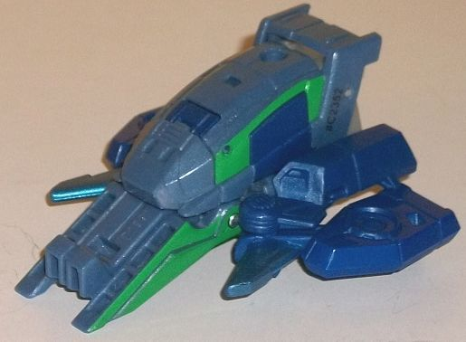
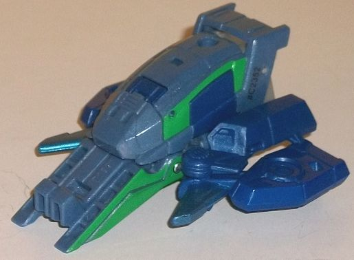

Difficulty of Transformation : Very Easy
Color Scheme : Moderately light milky semi-metallic blue, milky moderately dark blue, and some metallic silvery blue, forest green, red, silver, and light milky brownish gray
Individual Rating : 3.6
Allegiances
: Decepticon
Size
: Combiner Set
Overall Rating
: 4.5
 Cyberwarp
Cyberwarp

Difficulty of Transformation
: Very
Easy
Color Scheme
: Moderately light milky
semi-metallic blue, milky moderately dark blue, and some metallic silvery
blue, forest green, red, silver, and light milky brownish gray
Individual Rating
: 3.6
Apparently Hasbro mixed
up Cyberwarp's colors with Skyjack's, as despite the fact Cyberwarp in
the show has yellow, here she has green (you can tell by the facesculpt
which mold is which). Anyways, Cyberwarp's alternate mode is a very unique
VTOL hovercraft, not really looking much like anything on Earth. The middle
section has a small spoiler, a very sloped bulbous portion which someone
could theoretically ride in if certain details were painted to make it
look more like there were windows there, and a sort of angular "shovel"
piece on the front. Meanwhile, the sides have hoverfans molded into the
top, and a spike on each side to give the toy a bit more offensive of a
look to it. Although not particularly intricately detailed, Cyberwarp has
more than your average RID2015 toy, with vents, some aerodynamic lines,
and the like over most of this mode. As far as extras, it's kinda hard
to tell what counts as robot "kibble" in this mode since it's such an alien
mode, but on the back end you can clearly see Cyberwarp's upper legs and
waist behind the body of the vehicle mode; it doesn't really have a "back
end" in that respect. For colors, Cyberwarp is almost entirely blue; the
main body and front "shovel" are mostly a somewhat light blue, with quite
a lot of glitter in it that gives it a nice semi-metallic sheen against
the light. The side sections and fans are a darker milky blue, providing
enough color difference for some contrast and complementation at the same
time, though I think making the shades even greater in contrast would've
worked better. There's some metallic silvery blue used on the spikes on
the front, and some forest green applied to the sides of the body so Cyberwarp
at least gets in one major different color; that said, I think the green
could've been lighter for better contrast. She does have a port right in
front of the rear spoiler for you to plug in a Mini-Con Weaponizer or weapon
with a similarly-sized handle, for some firepower if you wish.
To transform Cyberwarp,
the sides fold out and back to become the arms, the body rotates down to
become the legs, and the shovel portion rotates back to reveal her head.
The end result is a surprisingly tall figure given the size of the vehicle
mode. Her individual robot mode is rather funky-looking, but I am glad
it's not
totally
just molded onto the bottom of the vehicle mode
like many other Combiner Set limbs. Her main body certainly is, with a
fairly round chest and some stylized ridged details down the center
into the waist. Her head has an almost "crown-like" feel to it, with five
points to her helmet, and a "normal" silver face with red eyes and a mad
look on her face (which is interesting, given she's the "traitor" of the
group that gives into the good guys). The headsculpt itself looks decent,
but there's a big shovel behind and above that's kind of difficult to ignore--
it just looks bad, and is my least favorite part of this mode. Her legs
are made of the curvy central section of her vehicle mode, and for the
most look pretty proportionally good-- it's just they're molded together,
so no individual leg movement or anything like that. The arms are made
from the fans, and could look better-- there's no robot hands molded into
the fans at all, so between that and having lower arms substantially larger
and flatter than her tiny skinny shoulders and upper arms, it makes it
look like she has on big foam pads over her actual hands, like large mittens
without a thumb. As you'd expect, the colors are mostly the same in this
mode, though the dark blue is a bit less prevalent. Her upper legs are
a rather blah shade of light milky brown, but at least that shade isn't
used much. Beyond the face and the green on the shoulders, there isn't
any paint in this mode that isn't carried over from the vehicle mode--
and she really needed some paint on those details on her chest, to break
up all the light blue. For articulation, she can move front-to-back at
the hips and knees, and her shoulders are on ball joints. It ain't much,
but it's still better than most Combiner Set appendage bots' articulation.
 Cyclonus
Cyclonus
Difficulty of Transformation
: Easy
Color Scheme
: Very dark purple,
light milky brownish gray, and some charcoal black, silver, red, and metallic
purple
Individual Rating
: 6.5
Cyclonus' alternate mode
of a highly futuristic jet/spacecraft is kept for his RID2015 version,
but it's a bit more square in certain aspects. For example, instead of
narrowing to a point, the whole nosecone-- which is even LONGER overall
prportionally than Cyclonus' traditionally has been, by the by-- is rather
rectangular, with it not really coming to a point at the end but rather
a somewhat curvy nub, with little "headlights" even molded into the front.
The cockpit itself barely rises above the surrounding area at all, making
it difficult to see how anyone inside Cyclonus' cockpit could actually
see out of that thing. The front half of the nosecone is pretty solid,
but the back half has the legs somewhat obviously on the side (especially
since they're colored light gray), with a gap in the side near where it
meets the body of this mode-- that portion doesn't look too great. The
wings on Cyclonus are nice and long, with multiple points on each, really
making it look like he can shred some enemies just by flying into them.
There's some small tailfins, and you can plug in a surprisingly detailed
gun (in terms of the mold) onto his top side to give him lots of firepower
in this mode. I mean, this gun has circuitry lines, tech bits, an ammo
clip, and quite a lot of stuff molded into it-- too bad he can only hold
it in this mode and not robot mode (it's largely meant for the combined
mode). Unfortunately, there's some pretty obvious kibble below Cyclonus
wings, and that's much of his robot arms and shoulders-- the top of the
shoulders follow the line of the front of his wings, even though they stick
out at the bottom, but the rest of the arms are incredibly obvious and
ruin the sleekness of the back end, though at least panels from the arms
form those tailfin bits. Outside of the gun, the mold detailing is fairly
sparse, as per the RID2015 usual, but there are some panel lines on the
wings and some tech-like stylized details on the nosecone. The color scheme
is almost entirely a very dark purple in this mode-- much more dark and
it'd be black! There is some charcoal black on his cockpit window and a
few other minor parts, but they contrast with the purple so little they're
barely noticeable. There's bits of a bland light milky brownish gray on
the sides of the cockpit and below the wings-- they do contrast with the
purple, but it's a blah color and it really doesn't look that good. At
least his main dark purple color DOES look good, even if there's too much
of it. Oh, and Cyclonus does have an additional port right behind his cockpit,
in case you want to atttach a Mini-Con Weaponizer (or weapon with a similarly-sized
port) on top for some additional weaponry in this mode.
To transform Cyclonus,
you separate his nosecone into his legs, fold back the wings a bit, then
rotate his waist around and rotate the arm kibble down to become... well..
his arms. The resulting individual robot mode is, as is the case with basically
every Combiner set individual robot, the toy's weakest mode. Cyclonus'
shoulders are too high, and he has no hands at all, just the end of the
combiner clips on his lower arms. His body and especially waist and thighs
are a bit too wide for a normally slender guy like Cyclonus-- a side effect
of the waist and upper legs forming the same portions of the combined form,
unfortunately. The wings kind of hang off Cyclonus' back-- I wish they
could fold up a bit more, as they are quite long, but they're not a huge
deal as they do enhance his silhouette a bit. The top section of his nosecone
just hangs behind his butt and doesn't look all that great, and the tailfin
panels on the back of his lower arms don't lock in place and are a minor
annoyance as well. His headsculpt is pretty Cyclonus-y, with long anteanne
"ear" spikes and an almost-as-long forehead spike coming out of the center,
with purple armor around his silver face with red eyes and wicked-looking
jagged eyebrows above said eyes. It's a pretty cool headsculpt, though
just casually brushing the black button on his chest will cause the combined
head & upper chest to flip up on top of it, which is kind of annoying.
The chest details themselves are fairly minimal, withs some basic pec and
ab details, but nothing all that impressive since it has to be fairly flat
for the other modes. There are some RID2015-usual angular divots on the
shoulders and some minor spikes on the feet and lower legs, but overall
the rest of Cyclonus isn't detailed nearly as impressively as his head.
As for his color cheme, the light gray is a bit more apparent in this mode,
and there are some (relatively) lighter metallic purple lines on his lower
arms that I wish were used a LOT more on the toy. Still, even though I'm
not a fan of the gray, I can't deny it breaks up the purple better in this
mode than in vehicle mode and makes him substantially less "one-tone".
For articulation in this mode, Cyclonus can move at the shoulders (at three
points), side-to-side at the elbows and hips, rotation at the knees (but
not the ability to bend), and slight ankle movement. Overall a bit disappointing
excepting the shoulders, especially since there's nothing in his transformation
that prevents more articulation from being present.
 Riotgear
Riotgear
Difficulty of Transformation
: Very
Easy
Color Scheme
: Dark milky purple
and some black, silver, dark blue, and red
Individual Rating
: 2.6
Riotgear continues his
teammates' schtick of having a VERY Cybertronian vehicle mode. It looks
like a curvy but tough off-road vehicle. His details are somewhat streamlined,
with a curved central segment, a blockier section in the back, and front
wheels on what appear to be long shock absorbers that come from the back
end. Kind of like a Cybertronian dune buggy-- if there's such a thing as
Cybertronian dunes. As far as robot parts go, there's none EASILY visible
from this mode, unless you look at the back end-- since there really IS
no back end to Riotgear, just a mostly hollow bit with the robot feet on
the bottom, made more obvious by the fact it's dark blue. The cockpit has
some pretty cool-looking ridged details on it, with some angular "rear
view mirrors" on the sides, and there's some circular "plug"-like details
on the sides. The wheels are, of course, treaded, and there's some basic
angular shapes on the back end. As for colors, in this mode Riotgear is
almost entirely a dark purple-- not quite as dark as Cyclonus' purple,
but still darker and a bit milky in shade. His tires are, of course, black,
and he's got red lines running down the central portion of this mode, and
his "rear view mirrors" are painted red to boot, giving him at least some
contrast in this mode.
It's hard to imagine
Riotgear's transformation being simpler-- just stand him up on his back
end and angle out his arms a bit at the shoulders. (And speaking of, that's
his only articulation in this mode-- his shoulders can move in-and-out
slightly. Sorry, there's no articulated version of this design you can
get.) As with most of these simplified Combiner limbs, Riotgear's robot
mode is basically just molded onto the bottom of his vehicle mode. It's
not nearly as buff-looking as his show model, and he doesn't have a gun
over his shoulder, but given the low parts count he still looks okay. His
legs have fairly large angular kneecaps and boot-like feet, and are the
part of Riotgear that suffers the worst proportionally in this mode-- they're
too short, almost laughably so. His chest details are elongated, but not
as obviously as his feet are squished up-- with as with most RID2015 designs,
it looks like the crumpled front of his vehicle mode. Riotgear's got some
fairly genetic ab and waist details, and some fairly round-looking arms
with generic hands and elbows molded into the bottom section, with his
large wheels taking up the shoulder sections. His headsculpt is decent,
with a "normal" face and eyes, but with a strong chinguard, a forehead
vent, and little bits sticking out of the sides of his forehead, making
his otherwise round head look almost like he has a "cap" on. The dark blue
plastic of his lower legs adds a bit more contrast to this mode, and there's
some silver on his waist and face, with some red on his eyes and on two
stripes on his chest-- overall, this helps break up the dark purple noticeably
more than in vehicle mode.
 Skyjack
Skyjack
Difficulty of Transformation
: Very
Easy
Color Scheme
: Moderately light milky
semi-metallic blue, milky moderately dark blue, and some metallic silvery
blue, yellow, red, silver, and light milky brownish gray
Individual Rating
: 3.7
I don't have much to
say about Skyjack-- it's Cyberwarp, but with all of the forest green replaced
with yellow. Otherwise, all the paint apps and plastic colors are the same.
There is one mold change, though, and that's to the head. Skyjack still
has the "normal" silver face and red eyes of Cyberwarp, but her "helmet"
is three-pronged, with a larger forehead crest and smaller side crests
that sweep out from the center. Unlike Cyberwarp, her expression is more
neutral, which makes me wonder just how often Hasbro mixed up these two
in the toys and fiction before coming out with the final product... Anyways,
I think the yellow contrasts against the blue a bit better than Cyberwarp's
green, so I'm giving Skyjack a SLIGHTLY higher rating than her mold-mate.
 Treadshock
Treadshock
Difficulty of Transformation
: Very
Easy
Color Scheme
: Dark milky purple
and some black, silver, dark blue, forest green, and red
Individual Rating
: 2.6
There's ALSO not much
I can say about Treadshock. Following in the lead of Skyjack compared to
Cyberwarp, he's nearly exactly the same as Riotgear-- color layout and
all-- but instead of red stripes down his vehicle mode and chest, he's
got forest green stripes. He still has some red, but only on the eyes of
his face, which is the only different mold change. For Treadshock, he has
a more angular head design, with a center and two side antennae sticking
out from his forehead. He's got a "normal" face and eyes like Riotgear,
but his chinguard isn't quite as large. Overall, like with Skyjack, I don't
see Treadshock as substantially better or worse than Riotgear, just slightly
different-- the green looks just as good against the purple as the red
does.
 Galvatronus
(Combined Form)
Galvatronus
(Combined Form)
Difficulty of Transformation
: Medium
Individual Rating
: 8.0
Galvatronus' combined mode is, like the other Combiner Force full-fledged combiner sets, the star of the show. The body is very much like a beefed up Cyclonus, including the headsculpt-- the head doesn't really take into account any of the other members' heads, and just looks like Cyclonus with his side horns not as long, the "crown" in the middle of his head elongated, and his head in general beefed up. There's some silver on his face, some red on his eyes, and some metallic purple in the center of his forehead-- and unfortunately that's all the paint apps you're going to get exclusive to this mode, everything else is taken from the individual toys' other modes. Galvatronus has a stocky main body with very wide shoulders, similar to Menasor but more curvy. Cyclonus' wings stick out a bit from the back and shoulders, but given how only the relatively skinny, angular bits stick out, I think it actually enhances Galvatronus' silhouette, overall. Cyberwarp and Skyjack form decent shoulders, but the hands are rather questionable, with large fans below the thumbs and fingers that extend entirely too long given the thumb length. They look like weird claw-things as opposed to actual, normal hands like he has on the show. The upper legs are made from Cyclonus' upper legs, and they peg into Riotgear and Treadshock to become the legs in a manner basically identical to Menasor's legs, with the front ends of Riotgear and Treadshock's vehicle modes forming the feet, and the back sections forming the lower legs. The kneecaps are a bit TOO obviously the details for Riotgear and Treadshock's individual lower legs, but otherwise they make for mighty fine legs overall. Given how that Cyberwarp and Skyjack's colors are the same minus one color change-- and the same with Riotgear and Treadshock's color schemes-- Galvatronus ends up with a pretty unified scheme. His body and legs aren't the same shade of purple, but they're close enough, and the arms' blue gives the toy a bit lighter of a main color as well. Some darker blue is shared between the arms and the kneecaps to help pull them together, of course, and there's a bit of light gray plastic on the middle arms and upper legs-- blah, but at least it's not used much. Black is used little, mostly just on the tires of the legs, the waist, and around the connector ports on the shoulders. Galvatronus can hold his gun in one of his hands, of course, or it can be pegged in behind his back if you don't want him actively holding it. For articulation, Galvatronus can move back-and-forth at the shoulders, side-to-side (at two points) at each elbow, and the four fingers on hand can also move in-and-out (as one piece, all four are connected). His hips can move side-to-side but unfortunately not forward, and he has ankle tilts as well. Better than the other RID2015 Combiner Sets, but he still leaves a bit to be desired, especially at the hips.
There's still plenty
of problems with Galvatronus-- lack of articulation, lots of unpainted
details, some weird proportions for the individual 'bots, way too little
paint-- but these problems exist with the other two RID2015 Combiner sets.
Overall, despite the fact that Riotgear/Treadshock and Skyjack/Cyberwarp
are barely different from each other, I'd recommend this Combiner set the
most because overall the designs are still the best, despite their many
flaws. Cyberwarp and Skyjack are the best appendage-bots from any Combiner
set, Cyclonus is the best torso-bot out of the Combiner sets, and Galvatronus
combined looks nice and balanced with some pretty good proportions, not
looking too stiff. Riotgear and Treadshock are the only bots that are on
par with the other appendage-bots in the Combiner sets. Plus, I will admit
I like some good Cybertronian alt modes. This set is still faaar from a
recommendation, but if you're only going to get one Combiner set I'd make
it this one.
Reviews by Beastbot